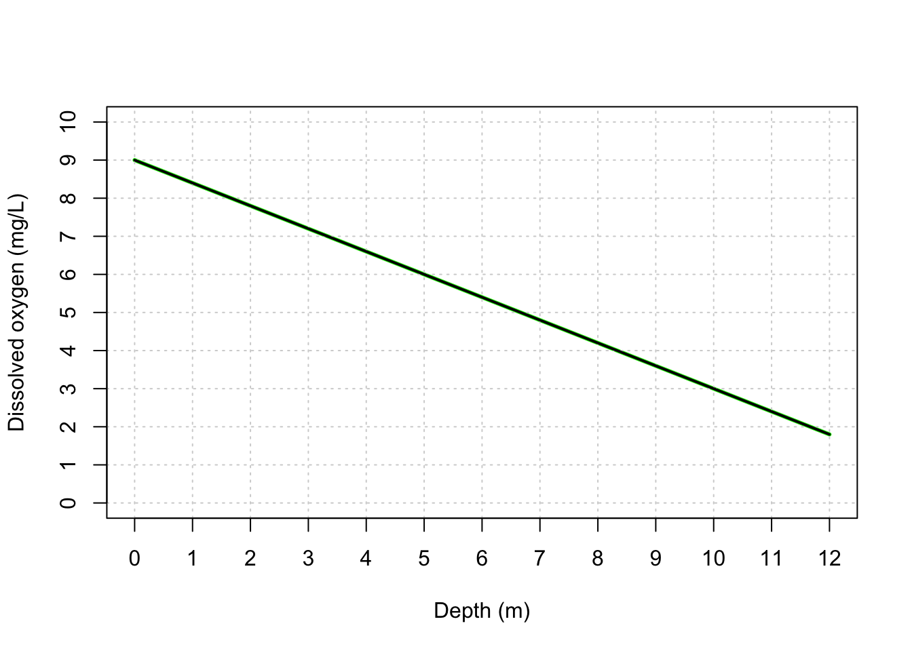
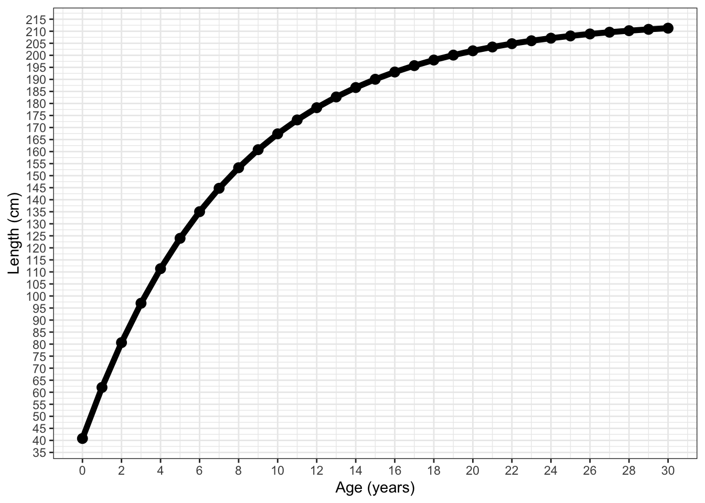
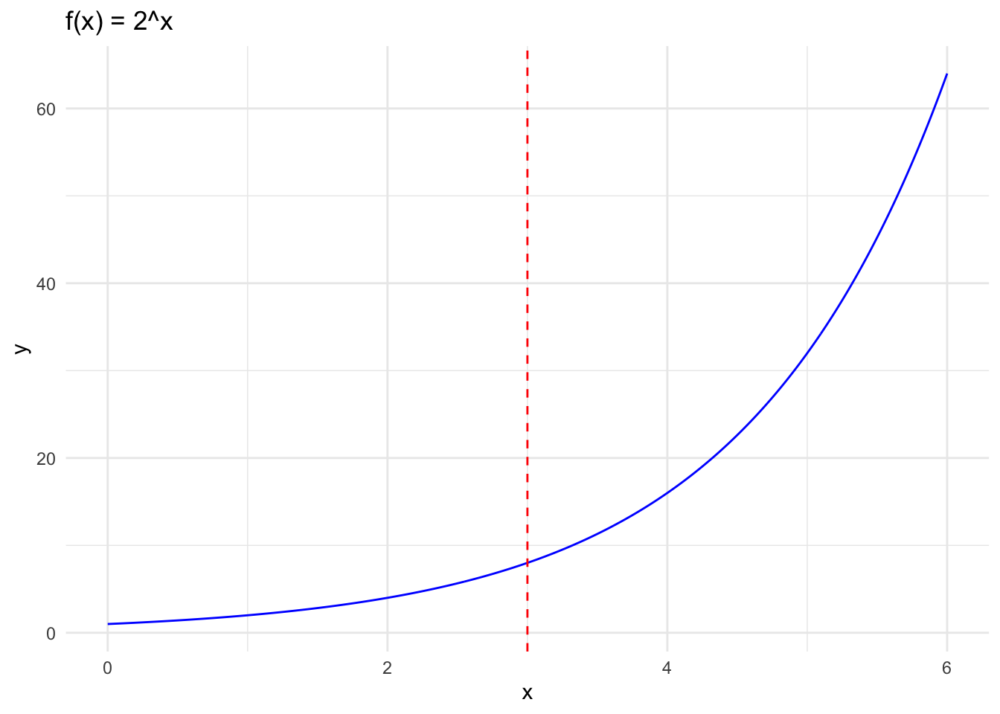
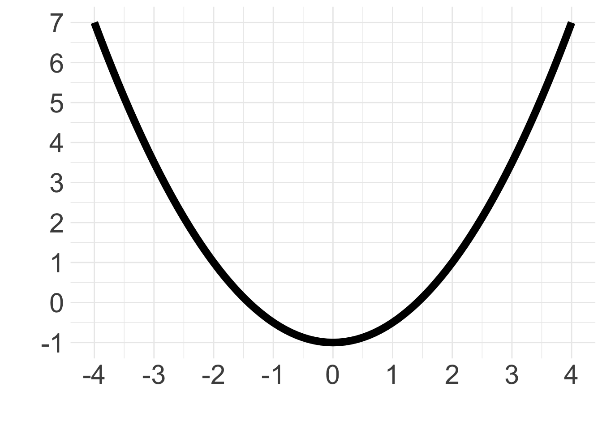

Solutions: Rates of change, limits, and derivatives problem set
Instructions
These are the solutions to the rates of change, limits, and derivatives problem set. Click a solution to expand it and try each problem yourself first!
Slope as a rate of change
1) Researchers plotted dissolved oxygen (DO) concentration against water depth in a lake, and found the relationship was linear over the depth range sampled.
- Write the equation for dissolved oxygen, \(DO\), as a function of depth.
- Interpret the slope in a full sentence, including units.
Solution
a) The line passes through \((0, 9)\) and \((10, 3)\), so:
- \(y\)-intercept: \(9\)
- slope: \(\frac{3-9}{10-0} = \frac{-6}{10} = -0.6\)
\(DO(depth) = -0.6 \cdot depth + 9\)
b)
“For every additional meter of depth, dissolved oxygen concentration decreases by an average of 0.6 mg/L, starting from a surface concentration of about 9 mg/L.”
2) The growth of sharks can be modeled using von Bertalanffy curves. Scalloped hammerhead sharks in the Atlantic were found to have growth curves that follow the graph below.

- What is the average slope from ages 0 to 8? From 20 to 30?
- What are the units of the average slopes and why would they change for a shark as they get older?
- How would you find the instantaneous slope for a shark at age 12? What is the closest approximation you can make with this data and graph?
Solution
a)
The average slope from ages 0 to 8 can be calcualted by: \[ slope = \frac{155-40}{8-0} = 14.375\]
The average slope from ages 0 to 8 can be calcualted by: \[ slope = \frac{210-200}{30-20} =1 \]
This tells us that the average rate of change for sharks between the ages of 0 to 8 was 14.375. For the ages, 20 to 30 the average change was 1.
b)
Slopes are in units of length over age, so the slope indicates the growth in centimeters every year. As animals get older, ther slow down their growth. Less energy is spent in growing and more invested in reproductive energy.
_Costa_Rica_(cropped).jpg){kind=link}
Limits and derivatives
3) Investigate what is the value of
\[\lim_{x\to 3}2^x.\]
Solution
To investigate this limit we can evaluate the function \(2^x\) with values of \(x\) approaching 3 from the left and the right. The table below shows that the limit approaches 8 at x=3 from both directions, so we can say \(\lim_{x\to 3}2^x=8\).
| x | 2.500000 | 2.900000 | 2.99000 | 2.999000 | 3.001000 | 3.010000 | 3.100000 | 3.50000 |
| y | 5.656854 | 7.464264 | 7.94474 | 7.994457 | 8.005547 | 8.055644 | 8.574188 | 11.31371 |
We can also graph this function and see that \(\lim_{x\to 3}2^x = 2^3 = 8\).

4) a. Approximate the slope of the tangent line in the graph below at \(x=2\).
- Write a short paragraph describing how the slope of the tangent line represents the derivative.

Solution
- First, we draw a tangent line to the graph at \(x=2\), this is the red line plotted with the graph.
Using rise over run we can take two points on the tangent line to find the slope. Let’s use \((2,1)\) and \((1,-1)\) as our points on the tangent, then
\[ slope=\frac{1- (-1)}{2-1}=2. \]
- The tangent line provides the slope or instaneous rate of change at single point along the curve. Therefore the slope of the tangent line is the derivative.
5) Let \(f(x) = 2x^2+4\). Calculate \(f'(x)\) and \(f'(-3)\).
Solution
\[\begin{align} f(x) &= 2x^2+4\\ f'(x) &= 4x\\ f'(-3) &=4(-3)\\ &=-12 \end{align}\]
6) Calculate the derivative of \(g(x) = x^4-5x^3+x-5\) at \(x=5\).
Solution
\[ \begin{align} g(x) &= x^4-5x^3+x-5 \\ g'(x) &= 4x^3-15x^2+1 \\ g'(5) &= 4(5)^3-15(5)^2+1\\ &=126 \end{align} \]
7) What is the instantaneous rate of change of \(h(x) = \frac{5}{x^2}\) at \(x=2\)?
Solution
We have that
\[ h(x) = \frac{5}{x^2} = 5x^{-2} \] Then,
\[ \begin{align} h'(x) & =-10x^{-3}\\ h'(2) &= -10(2)^{-3}\\ & = -\frac{10}{8}\\ &=-1.25. \end{align} \]
Comparing instantaneous and average rates of change
8) Since 2010, a mountain glacier has been losing volume at an accelerating pace as regional temperatures rise. Researchers model the cumulative ice volume lost, \(V(t)\) (in km³), since monitoring began, as:
\[ V(t) = 0.5t^2 + 2t \]
where \(t\) is years since 2010.
- Use differentiation rules to find \(V'(t)\).
- Evaluate \(V'(5)\). What does this value mean in the context of the glacier? State it as a full sentence, with units.
- Now calculate the average rate of ice loss between \(t=4\) and \(t=8\).
- Are the values from (b) and (c) the same? In your own words, explain conceptually why an “average” rate of change over an interval doesn’t have to match the “instantaneous” rate of change at a single point within it.
Solution
(a) Using the power rule and sum rule: \[ V'(t) = t + 2 \]
(b) \[ V'(5) = 5 + 2 = 7 \ \frac{\text{km}^3}{\text{year}} \]
“In 2015 (five years after monitoring began), the glacier was losing ice at an instantaneous rate of about 7 km³ per year.”
(c) \[ V(4) = 0.5(4)^2+2(4) = 16, \qquad V(8) = 0.5(8)^2+2(8) = 48 \] \[ \text{average rate of change} = \frac{V(8)-V(4)}{8-4} = \frac{48-16}{4} = 8 \ \frac{\text{km}^3}{\text{year}} \]
(d) The two values are close, but not the same (7 vs. 8 km³/year). The average rate of change smooths the ice loss out over the entire 4-year window from \(t=4\) to \(t=8\), while the instantaneous rate captures the exact pace of loss at the single moment \(t=5\).